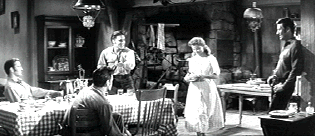

| Love Me Tender/ C+, B+ |
| Fox/1956/89/ANA 2.35/BW |
From an historical point of view Elvis
Presley's screen debut is reason enough to see a movie, but you don't need
an excuse to see Love Me Tender. It's a decent western set at the
very end of the Civil War, and in fact, one the weakest aspects is the
Presley performance. It's surely not the kind of film you would have
expected as a platform for the rock and roll star. He does get to sing a
quartet of songs twisting his hips and shaking those knees with
anachronistic vigor. The songs are fun and well executed, but let's cut to
the chase.
Love Me Tender starts out quite
successfully with a Confederate hijack of a Union payroll train. When the
small southern unit finds out that the war is over, they face a quandary
about giving back the money. Is is rightly spoils of war? The three Reno
brothers are part of the raiding party that disburse to return to their
respective homes.
 |
|
One big happy family. ©Fox
|
The brothers Vance, Brett and Ray are greeted at
their farm by Mom, youngest brother Clint, and Cathy, the girl Vance left
behind. The big surprise is that kid brother Clint has stepped into
Vance's shoes. Just when you think they have things worked out, Mr.
Siringo and a team of Union soldiers arrive to throw a few curves at the
Renos.
The beginning of the film, right up until the big
crisis is quite well done. It's a family drama, it's about what war can do
to a family. The relationships are fairly well drawn. The relationship
between Vance and Clint is reasonable; certainly the predicament that
Cathy finds herself in between Vance and Clint is a situation that easily
could have come about in these circumstances. But the script falls apart
in trying to sort out the Renos' troubles. It kicks up enough horse dust
for a Saturday morning serial matinee.
Presley is quite awkward in his debut. He doesn't
have a good feel for the camera. When he sings, he's dynamic and
comfortable, but he interacts stiffly, aware of the camera and trying to
unaware. Richard Egan is a solid presence as Vance and Debra Paget is a
luscious attractive Cathy. William Campbell and James Drury are fine as
the brothers, though Neville Brand is somewhat uncomfortable as one of
Confederate raiders, mainly because it's a poorly drawn role.
Love Me Tender has been turned with quite
a good-looking transfer. There are a few errant source markings, but they
are minor and never intrude on the image. There's good contrast range and
plenty of light output. Black levels are very good. Excellent shadow
detail and a fine gray scale range. The image is quite sharp, though a
couple of scenes might be slightly soft. The four channel stereo mix is
pleasing and the Presley songs come across very well. |
|
|
|

The Feature Archive has articles ranging from Akira Kurosawa to Blonde Bimbos.

Click on the image above for a "dream interview" with
director John Ford.

The
Movie Poster Archive include extensive poster images from the films of
stars like Susan Hayward, Kirk Douglas, Katharine Hepburn and many
more. Our featured star is Clark Gable.

Searchers, The/ A,B

John Wayne invests Ethan Edwards with enormous dignity and determination.
A classic western from director John Ford. Mesmerizingly beautiful.
 
ISF Monitor
Calibrations in the Tristate New York area. Lots of hardware
info and frequent hardware peaks from video expert Kevin Miller. They may
be judgmental, but that's the point, isn't it. Lots of DVD reviews plus
news and more.
World class video expert Joe Kane's home on the Internet. Look
for details on the new DVD Essentials.

DVD reviews for women from a woman's point of view
|